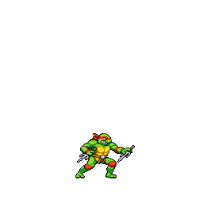
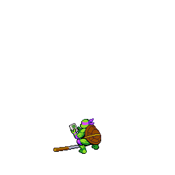

Our Pizza is Totally Radical!

Cowabunga! The best pizza in town!


Join the Turtles in their epic adventure. Play the classic arcade game online right here and now! Fight alongside Leonardo, Michelangelo, Donatello, and Raphael to save the city from the evil Shredder and his henchmen. Grab your friends and relive the arcade excitement in your browser.
Play with your keyboard or If you have a game pad, plug it in baby!!!
Quick Keyboard Tips: "shift" to add coins, "s" to start, Arrows to move "s" to attack, "x" to jump
Note: reports of audio disruption using firefox browser
We are more than just a pizzeria; we are a team of pizza visionaries, united by a shared belief that pizza should be an experience that transcends the ordinary. Our dedication to crafting the finest pizza is akin to the Ninja Turtles' unwavering commitment to justice and fighting crime.
At Ninja Turtles Pizza, we don't just make pizza; we create culinary masterpieces that ignite your senses and transport you to a world of taste sensations. Our journey begins with the selection of the finest ingredients sourced from trusted suppliers worldwide.
Our passionate pizza artisans work tirelessly, handcrafting each pizza with meticulous attention to detail. We believe that every pizza should be a work of art, a symphony of flavors that dances on your palate. It starts with our perfect pizza crust, crisp and golden, baked to perfection in our wood-fired oven.
We take pride in the quality of our ingredients, from the premium mozzarella cheese that blankets our pizzas to the vine-ripened tomatoes that form the heart of our rich tomato sauce. Our toppings are carefully chosen to complement each other, ensuring every bite is a burst of harmonious flavors.
Just as the Ninja Turtles are known for their teamwork, we too believe in the power of collaboration. Our team works seamlessly to bring you the best pizza in town, and our passion shines through in every slice we serve.
So, whether you're looking for a classic slice or a gourmet adventure, join us at Ninja Turtles Pizza and become part of our pizza-loving family. Discover the difference that passion, dedication, and creativity make in the world of pizza. It's not just a meal; it's an experience, and we invite you to savor it with us.
If you have any questions or would like to place an order, please contact us:
Email: info@tmntpizzaco.com